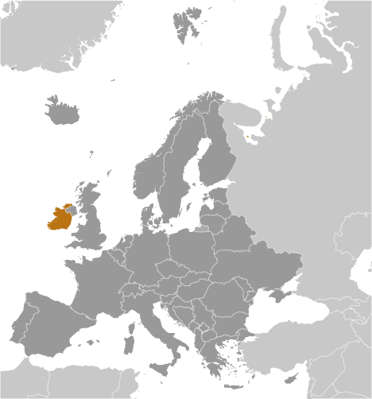
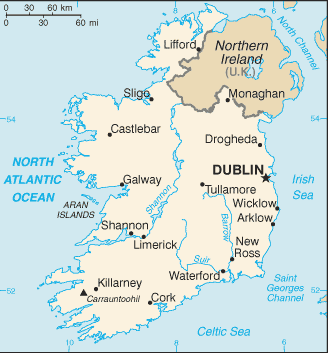
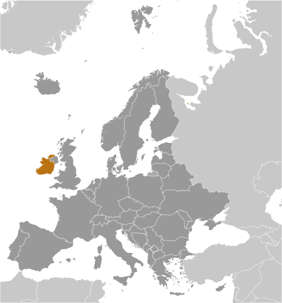
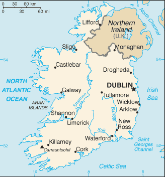

Europe :: IRELAND
Introduction :: IRELAND
-
Celtic tribes arrived on the island between 600 and 150 B.C. Invasions by Norsemen that began in the late 8th century were finally ended when King Brian BORU defeated the Danes in 1014. Norman invasions began in the 12th century and set off more than seven centuries of Anglo-Irish struggle marked by fierce rebellions and harsh repressions. The Irish famine of the mid-19th century saw the population of the island drop by one third through starvation and emigration. For more than a century after that the population of the island continued to fall only to begin growing again in the 1960s. Over the last 50 years, Ireland's high birthrate has made it demographically one of the youngest populations in the EU. The modern Irish state traces its origins to the failed 1916 Easter Monday Uprising that touched off several years of guerrilla warfare resulting in independence from the UK in 1921 for 26 southern counties; six northern (Ulster) counties remained part of the UK. Unresolved issues in Northern Ireland erupted into years of violence known as the "Troubles" that began in the 1960s. The Government of Ireland was part of a process along with the UK and US Governments that helped broker what is known as The Good Friday Agreement in Northern Ireland in 1998. This initiated a new phase of cooperation between the Irish and British Governments. Ireland was neutral in World War II and continues its policy of military neutrality. Ireland joined the European Community in 1973 and the euro-zone currency union in 1999. The economic boom years of the Celtic Tiger (1995-2007) saw rapid economic growth, which came to an abrupt end in 2008 with the meltdown of the Irish banking system. Today the economy is recovering, fueled by large and growing foreign direct investment, especially from US multi-nationals.
Geography :: IRELAND
-
Western Europe, occupying five-sixths of the island of Ireland in the North Atlantic Ocean, west of Great Britain53 00 N, 8 00 WEuropetotal: 70,273 sq kmland: 68,883 sq kmwater: 1,390 sq kmcountry comparison to the world: 121slightly larger than West Virginiatotal: 443 kmborder countries (1): UK 443 km1,448 kmterritorial sea: 12 nmexclusive fishing zone: 200 nmtemperate maritime; modified by North Atlantic Current; mild winters, cool summers; consistently humid; overcast about half the timemostly flat to rolling interior plain surrounded by rugged hills and low mountains; sea cliffs on west coastmean elevation: 118 melevation extremes: lowest point: Atlantic Ocean 0 mhighest point: Carrauntoohil 1,041 mnatural gas, peat, copper, lead, zinc, silver, barite, gypsum, limestone, dolomiteagricultural land: 66.1%arable land 15.4%; permanent crops 0%; permanent pasture 50.7%forest: 10.9%other: 23% (2011 est.)0 sq km (2012)population distribution is weighted to the eastern side of the island, with the largest concentration being in and around Dublin; populations in the west are small due to mountainous land, poorer soil, lack of good transport routes, and fewer job opportunitiesrare extreme weather eventswater pollution, especially of lakes, from agricultural runoffparty to: Air Pollution, Air Pollution-Nitrogen Oxides, Air Pollution-Sulfur 94, Biodiversity, Climate Change, Climate Change-Kyoto Protocol, Desertification, Endangered Species, Environmental Modification, Hazardous Wastes, Law of the Sea, Marine Dumping, Ozone Layer Protection, Ship Pollution, Tropical Timber 83, Tropical Timber 94, Wetlands, Whalingsigned, but not ratified: Air Pollution-Persistent Organic Pollutants, Marine Life Conservationstrategic location on major air and sea routes between North America and northern Europe; over 40% of the population resides within 100 km of Dublin
People and Society :: IRELAND
-
5,011,102 (July 2017 est.)country comparison to the world: 121noun: Irishman(men), Irishwoman(women), Irish (collective plural)adjective: IrishIrish 82.2%, Irish travelers 0.7%, other white 9.5%, Asian 2.1%, black 1.4%, other 1.5%, unspecified 2.6% (2016 est.)English (official, the language generally used), Irish (Gaelic or Gaeilge) (official, spoken by approximately 39.8% of the population in 2016; mainly spoken in areas along Ireland's western coast known as gaeltachtai, which are officially recognized regions where Irish is the predominant language)Roman Catholic 78.3%, Church of Ireland 2.7%, other Christian 1.6%, Orthodox 1.3%, Muslim 1.3%, other 2.4%, none 9.8%, unspecified 2.6% (2016 est.)0-14 years: 21.46% (male 549,864/female 525,608)15-24 years: 11.84% (male 301,114/female 292,055)25-54 years: 43.2% (male 1,087,587/female 1,077,383)55-64 years: 10.42% (male 261,650/female 260,737)65 years and over: 13.07% (male 303,078/female 352,026) (2017 est.)total dependency ratio: 53.8youth dependency ratio: 33.4elderly dependency ratio: 20.3potential support ratio: 4.9 (2015 est.)total: 36.8 yearsmale: 36.4 yearsfemale: 37.1 years (2017 est.)country comparison to the world: 681.15% (2017 est.)country comparison to the world: 9714.1 births/1,000 population (2017 est.)country comparison to the world: 1376.6 deaths/1,000 population (2017 est.)country comparison to the world: 1424 migrant(s)/1,000 population (2017 est.)country comparison to the world: 28population distribution is weighted to the eastern side of the island, with the largest concentration being in and around Dublin; populations in the west are small due to mountainous land, poorer soil, lack of good transport routes, and fewer job opportunitiesurban population: 63.8% of total population (2017)rate of urbanization: 1.45% annual rate of change (2015-20 est.)DUBLIN (capital) 1.169 million (2015)at birth: 1.06 male(s)/female0-14 years: 1.05 male(s)/female15-24 years: 1.03 male(s)/female25-54 years: 1.01 male(s)/female55-64 years: 1 male(s)/female65 years and over: 0.86 male(s)/femaletotal population: 1 male(s)/female (2016 est.)30.7 years (2015 est.)8 deaths/100,000 live births (2015 est.)country comparison to the world: 156total: 3.6 deaths/1,000 live birthsmale: 4 deaths/1,000 live birthsfemale: 3.3 deaths/1,000 live births (2017 est.)country comparison to the world: 198total population: 80.9 yearsmale: 78.6 yearsfemale: 83.4 years (2017 est.)country comparison to the world: 331.97 children born/woman (2017 est.)country comparison to the world: 1257.8% of GDP (2014)country comparison to the world: 572.79 physicians/1,000 population (2015)2.9 beds/1,000 population (2011)improved:urban: 97.9% of populationrural: 97.8% of populationtotal: 97.9% of populationunimproved:urban: 2.1% of populationrural: 2.2% of populationtotal: 2.1% of population (2015 est.)improved:urban: 89.1% of populationrural: 92.9% of populationtotal: 90.5% of populationunimproved:urban: 10.9% of populationrural: 7.1% of populationtotal: 9.5% of population (2015 est.)0.2% (2016 est.)country comparison to the world: 896,200 (2016 est.)country comparison to the world: 105NA25.3% (2016)country comparison to the world: 515.3% of GDP (2013)country comparison to the world: 31total: 19 yearsmale: 19 yearsfemale: 19 years (2014)total: 20.9%male: 23.6%female: 17.6% (2015 est.)country comparison to the world: 38
Government :: IRELAND
-
conventional long form: noneconventional short form: Irelandlocal long form: nonelocal short form: Eireetymology: the modern Irish name "Eire" evolved from the Gaelic "Eriu," the name of the matron goddess of Ireland (goddess of the land); the names "Ireland" in English and "Eire" in Irish are direct translations of each otherparliamentary republicname: Dublingeographic coordinates: 53 19 N, 6 14 Wtime difference: UTC 0 (5 hours ahead of Washington, DC, during Standard Time)daylight saving time: +1hr, begins last Sunday in March; ends last Sunday in October28 counties and 3 cities*; Carlow, Cavan, Clare, Cork, Cork*, Donegal, Dublin*, Dun Laoghaire-Rathdown, Fingal, Galway, Galway*, Kerry, Kildare, Kilkenny, Laois, Leitrim, Limerick, Longford, Louth, Mayo, Meath, Monaghan, Offaly, Roscommon, Sligo, South Dublin, Tipperary, Waterford, Westmeath, Wexford, Wicklow6 December 1921 (from the UK by treaty)Saint Patrick's Day, 17 March; note - marks the traditional death date of Saint Patrick, patron saint of Ireland, during the latter half of the fifth century A.D. (most commonly cited years are c. 461 and c. 493); although Saint Patrick's feast day was celebrated in Ireland as early as the ninth century, it only became an official public holiday in Ireland in 1903history: previous 1922; latest drafted 14 June 1937, adopted by plebiscite 1 July 1937, effective 29 December 1937amendments: proposed as bills by Parliament; passage requires majority vote by both the Senate and House of Representatives, majority vote in a referendum, and presidential signature; amended many times, last in 2015 (2016)common law system based on the English model but substantially modified by customary law; judicial review of legislative acts by Supreme Courtaccepts compulsory ICJ jurisdiction with reservations; accepts ICCt jurisdictioncitizenship by birth: yescitizenship by descent: yesdual citizenship recognized: yesresidency requirement for naturalization: 4 of the previous 8 years18 years of age; universalchief of state: President Michael D. HIGGINS (since 11 November 2011)head of government: Taoiseach (Prime Minister) Leo VARADKAR (since 14 June 2017)cabinet: Cabinet nominated by the prime minister, appointed by the president, approved by the Dali Eireann (lower house of Parliament)elections/appointments: president directly elected by majority popular vote for a 7-year term (eligible for a second term); election last held on 29 October 2011 (next to be held in October 2018); taoiseach (prime minister) nominated by the House of Representatives (Dail Eireann), appointed by the presidentelection results: Michael D. HIGGINS elected president; percent of vote - Michael D. HIGGINS (Labor Party) 39.6%, Sean GALLAGHER (independent) 28.5%, Martin MCGUINNESS (Sinn Fein) 13.7%, Gay MITCHELL (Fine Gael) 6.4%, David NORRIS (independent) 6.2%, other 5.6%description: bicameral Parliament or Oireachtas consists of the Senate or Seanad Eireann (60 seats; 43 members indirectly elected by panels of various vocational interests, 11 appointed by the prime minister, and 6 elected by graduates of the University of Dublin and the National University of Ireland; members serve 5-year terms) and the House of Representatives or Dail Eireann (158 seats; members directly elected in multi-seat constituencies by proportional representation vote; members serve 5-year terms)elections: Senate - last held in April and May 2016 (next to be held no later than 2021); House of Representatives - last held on 26 February 2016 (next to be held no later than 2021)election results: Senate - percent of vote by party - NA; seats by party - Fine Gael 19, Fianna Fail 14, Sinn Fein 7, Labor Party 5, Green Party 1, independent 14House of Representatives - percent of vote by party - Fine Gael 25.5%, Fianna Fail 24.4%, Sinn Fein 13.8%, Labor Party 6.6%, AAA-PBD 4.0%, Social Democrats 3.0%, Green Party 2.7%, Renua Ireland 2.2% independent 17.8%; seats by party - Fine Gael 50, Fianna Fail 44, Sinn Fein 23, Labor Party 7, AAA-PBP 6, Social Democrats 3, Green Party 2, independent 23highest court(s): Supreme Court of Ireland (consists of the chief justice, 9 judges, 2 ex-officio members - the presidents of the High Court and Court of Appeal - and organized in 3-, 5-, or 7-judge panels, depending on the importance or complexity of an issue of law)judge selection and term of office: judges nominated by the prime minister and Cabinet and appointed by the president; chief justice serves in the position for 7 years; judges can serve until age 70subordinate courts: High Court, Court of Appeal; circuit and district courts; criminal courtsAnti-Austerity Alliance-People Before Profit or AAA-PBP [collective leadership]Fianna Fail [Micheal MARTIN]Fine Gael [Leo VARADKAR]Green Party [Eamon RYAN]Labor (Labour) Party [Brendan HOWLIN]Renua Ireland [John LEAHY]Sinn Fein [Gerry ADAMS]Social Democratic Party [Stephen DONNELLY, Catherine MURPHY, Roisin SHORTALL]Socialist Party [collective leadership]The Workers' Party [Michael DONNELLY]Continuity IRA (terrorist group)Families Acting for Innocent Relatives or FAIR [Brian MCCONNELL] (seek compensation for victims of violence)Iona Institute [David QUINN] (a conservative Catholic think tank)Irish Anti-War Movement [Richard BOYD BARRETT] (campaigns against wars around the world)Keep Ireland Open (environmental group)Oglaigh na hEireann (terrorist group)Midland Railway Action Group or MRAG [Willie ALLEN] (transportation promoters)New Irish Republican Army (terrorist group combining elements of the former Real IRA and Republican Action Against Drugs)Peace and Neutrality Alliance or PANA [Roger COLE] (campaigns to protect Irish neutrality)Rail Users Ireland (formerly the Platform 11 - transportation promoters)32 Country Sovereignty Movement or 32CSM (supports unifying Northern Ireland with the rest of the island under Irish government sovereignty)ADB (nonregional member), Australia Group, BIS, CD, CE, EAPC, EBRD, ECB, EIB, EMU, ESA, EU, FAO, FATF, IAEA, IBRD, ICAO, ICC (national committees), ICCt, ICRM, IDA, IEA, IFAD, IFC, IFRCS, IGAD (partners), IHO, ILO, IMF, IMO, Interpol, IOC, IOM, IPU, ISO, ITSO, ITU, ITUC (NGOs), MIGA, MINURSO, MONUSCO, NEA, NSG, OAS (observer), OECD, OPCW, OSCE, Paris Club, PCA, PFP, UN, UNCTAD, UNDOF, UNESCO, UNHCR, UNIDO, UNIFIL, UNOCI, UNRWA, UNTSO, UPU, WCO, WHO, WIPO, WMO, WTO, ZCchief of mission: Ambassador Daniel Gerard MULHALL (since 8 September 2017)chancery: 2234 Massachusetts Avenue NW, Washington, DC 20008telephone: [1] (202) 462-3939FAX: [1] (202) 232-5993consulate(s) general: Atlanta, Austin (TX), Boston, Chicago, New York, San Franciscochief of mission: Ambassador (vacant) Charge d'Affaires L. Reece SMYTH (since 20 January 2017)embassy: 42 Elgin Road, Ballsbridge, Dublin 4mailing address: use embassy street addresstelephone: [353] (1) 668-8777FAX: [353] (1) 668-9946three equal vertical bands of green (hoist side), white, and orange; officially the flag colors have no meaning, but a common interpretation is that the green represents the Irish nationalist (Gaelic) tradition of Ireland; orange represents the Orange tradition (minority supporters of William of Orange); white symbolizes peace (or a lasting truce) between the green and the orangenote: similar to the flag of Cote d'Ivoire, which is shorter and has the colors reversed - orange (hoist side), white, and green; also similar to the flag of Italy, which is shorter and has colors of green (hoist side), white, and redharp, shamrock (trefoil); national colors: blue, greenname: "Amhran na bhFiann" (The Soldier's Song)lyrics/music: Peadar KEARNEY [English], Liam O RINN [Irish]/Patrick HEENEY and Peadar KEARNEYnote: adopted 1926; instead of "Amhran na bhFiann," the song "Ireland's Call" is often used at athletic events where citizens of Ireland and Northern Ireland compete as a unified team
Economy :: IRELAND
-
Ireland is a small, modern, trade-dependent economy. Ireland was among the initial group of 12 EU nations that began circulating the euro on 1 January 2002. GDP growth averaged 6% in 1995-2007, but economic activity dropped sharply during the world financial crisis and the subsequent collapse of its domestic property market and construction industry. Faced with sharply reduced revenues and a burgeoning budget deficit from efforts to stabilize its fragile banking sector, the Irish Government introduced the first in a series of draconian budgets in 2009. These measures were not sufficient to stabilize Ireland’s public finances. In 2010, the budget deficit reached 32.4% of GDP - the world's largest deficit, as a percentage of GDP. In late 2010, the former COWEN government agreed to a $92 billion loan package from the EU and IMF to help Dublin recapitalize Ireland’s banking sector and avoid defaulting on its sovereign debt. In March 2011, the KENNY government intensified austerity measures to meet the deficit targets under Ireland's EU-IMF bailout program.In late 2013, Ireland formally exited its EU-IMF bailout program, benefiting from its strict adherence to deficit-reduction targets and success in refinancing a large amount of banking-related debt. In 2014, the economy rapidly picked up and GDP grew by 5.2%. The recovering economy assisted lowering the deficit to 2.5% of GDP. In late 2014, the government introduced a fiscally neutral budget, marking the end of the austerity program. Continued growth of tax receipts has allowed the government to lower some taxes and increase public spending while keeping to its deficit-reduction targets. In 2015, GDP growth exceeded 26%, the highest growth in the EU for two consecutive years. This dramatic increase reflected one-off statistical revisions, multinational corporate restructurings, and the aircraft leasing sector, rather than gains in the on the ground economy. Growth moderated to around 4.2% in 2016.In the wake of the collapse of the construction sector and the downturn in consumer spending and business investment, the export sector, dominated by foreign multinationals, has become an even more important component of Ireland's economy. Ireland’s low corporation tax of 12.5% and a talented pool of high-tech laborers have been key factors in encouraging business investment. Loose tax residency requirements made Ireland a common destination for international firms seeking to avoid taxation. In 2014, amid growing international pressure, the government announced it would phase in more stringent tax laws, effectively closing a commonly used loophole.$325.5 billion (2016 est.)$305.8 billion (2015 est.)$241 billion (2014 est.)note: data are in 2016 dollarscountry comparison to the world: 53$304.4 billion (2016 est.)5.1% (2016 est.)25.5% (2015 est.)8.3% (2014 est.)country comparison to the world: 34$69,300 (2016 est.)$66,500 (2015 est.)$53,400 (2014 est.)note: data are in 2016 dollarscountry comparison to the world: 1235.7% of GDP (2016 est.)32.1% of GDP (2015 est.)24% of GDP (2014 est.)country comparison to the world: 13household consumption: 35.1%government consumption: 10.3%investment in fixed capital: 31.5%investment in inventories: 1.1%exports of goods and services: 121.7%imports of goods and services: -99.8% (2016 est.)agriculture: 1%industry: 39.3%services: 59.7% (2016 est.)barley, potatoes, wheat; beef, dairy productspharmaceuticals, chemicals, computer hardware and software, food products, beverages and brewing; medical devices3% (2016 est.)country comparison to the world: 822.193 million (2016 est.)country comparison to the world: 122agriculture: 5%industry: 11%services: 84% (2015 est.)7.9% (2016 est.)9.5% (2015 est.)country comparison to the world: 998.2% (2013 est.)lowest 10%: 2.9%highest 10%: 27.2% (2000)31.3 (2013 est.)35.9 (1987 est.)country comparison to the world: 119revenues: $80.81 billionexpenditures: $82.5 billion (2016 est.)27.5% of GDP (2016 est.)country comparison to the world: 100-0.6% of GDP (2016 est.)country comparison to the world: 6072.9% of GDP (2016 est.)77.1% of GDP (2015 est.)note: data cover general government debt, and includes debt instruments issued (or owned) by government entities other than the treasury; the data include treasury debt held by foreign entities; the data include debt issued by subnational entities, as well as intra-governmental debt; intra-governmental debt consists of treasury borrowings from surpluses in the social funds, such as for retirement, medical care, and unemployment; debt instruments for the social funds are not sold at public auctionscountry comparison to the world: 46calendar year-0.2% (2016 est.)0% (2015 est.)country comparison to the world: 370.05% (31 December 2015)0.15% (31 August 2014)note: this is the European Central Bank's rate on the marginal lending facility, which offers overnight credit to banks in the euro areacountry comparison to the world: 1493.48% (31 December 2016 est.)3.36% (31 December 2015 est.)country comparison to the world: 163$156.2 billion (31 December 2016 est.)$146.7 billion (31 December 2015 est.)note: see entry for the European Union for money supply for the entire euro area; the European Central Bank (ECB) controls monetary policy for the 18 members of the Economic and Monetary Union (EMU); individual members of the EMU do not control the quantity of money circulating within their own borderscountry comparison to the world: 28$204.9 billion (31 December 2016 est.)$206 billion (31 December 2015 est.)country comparison to the world: 36$287.1 billion (31 December 2016 est.)$305.6 billion (31 December 2015 est.)country comparison to the world: 37$128 billion (31 December 2015 est.)$143.5 billion (31 December 2014 est.)$170.1 billion (31 December 2013 est.)country comparison to the world: 39$10.17 billion (2016 est.)$28.97 billion (2015 est.)country comparison to the world: 19$206 billion (2016 est.)$216.9 billion (2015 est.)country comparison to the world: 23machinery and equipment, computers, chemicals, medical devices, pharmaceuticals; foodstuffs, animal productsUS 26%, UK 12.7%, Belgium 12.6%, Germany 6.7%, Switzerland 5.4%, Netherlands 5.1%, France 4.2% (2016)$92.09 billion (2016 est.)$94.26 billion (2015 est.)country comparison to the world: 34data processing equipment, other machinery and equipment, chemicals, petroleum and petroleum products, textiles, clothingUK 28.8%, US 15.9%, France 12.6%, Germany 10.1%, Netherlands 4.7% (2016)$3.591 billion (31 December 2016 est.)$2.203 billion (31 December 2015 est.)country comparison to the world: 100$2.47 trillion (31 March 2016 est.)$2.35 trillion (31 March 2015 est.)country comparison to the world: 9$1.411 trillion (31 December 2016 est.)$1.381 trillion (31 December 2015 est.)country comparison to the world: 6$1.404 trillion (31 December 2016 est.)$1.403 trillion (31 December 2015 est.)country comparison to the world: 8euros (EUR) per US dollar -0.9214 (2016 est.)0.885 (2015 est.)0.885 (2014 est.)0.7634 (2013 est.)0.7752 (2012 est.)
Energy :: IRELAND
-
electrification - total population: 100% (2016)25.2 billion kWh (2015 est.)country comparison to the world: 7023.79 billion kWh (2015 est.)country comparison to the world: 691.583 billion kWh (2016 est.)country comparison to the world: 48871 million kWh (2016 est.)country comparison to the world: 709.557 million kW (2015 est.)country comparison to the world: 6368.1% of total installed capacity (2015 est.)country comparison to the world: 1060% of total installed capacity (2015 est.)country comparison to the world: 832.5% of total installed capacity (2015 est.)country comparison to the world: 13529.7% of total installed capacity (2015 est.)country comparison to the world: 150 bbl/day (2016 est.)country comparison to the world: 1290 bbl/day (2016 est.)country comparison to the world: 11765,390 bbl/day (2016 est.)country comparison to the world: 500 bbl (1 January 2017 es)country comparison to the world: 12964,310 bbl/day (2016 est.)country comparison to the world: 77151,700 bbl/day (2016 est.)country comparison to the world: 6931,540 bbl/day (2016 est.)country comparison to the world: 61119,600 bbl/day (2016 est.)country comparison to the world: 54132 million cu m (2015 est.)country comparison to the world: 805.06 billion cu m (2015 est.)country comparison to the world: 640 cu m (2014 est.)country comparison to the world: 974.234 billion cu m (2015 est.)country comparison to the world: 369.911 billion cu m (1 January 2017 es)country comparison to the world: 8434 million Mt (2013 est.)country comparison to the world: 74
Communications :: IRELAND
-
total subscriptions: 1,897,134subscriptions per 100 inhabitants: 38 (July 2016 est.)country comparison to the world: 57total: 4,950,118subscriptions per 100 inhabitants: 100 (July 2016 est.)country comparison to the world: 119general assessment: modern digital system using cable and microwave radio relaydomestic: system privatized but dominated by former state monopoly operator; increasing levels of broadband access particularly in urban areasinternational: country code - 353; landing point for the Hibernia-Atlantic submarine cable with links to the US, Canada, and UK; satellite earth stations - 81 (2014)publicly owned broadcaster Radio Telefis Eireann (RTE) operates 2 TV stations; commercial TV stations are available; about 75% of households utilize multi-channel satellite and TV services that provide access to a wide range of stations; RTE operates 4 national radio stations and has launched digital audio broadcasts on several stations; a number of commercial broadcast stations operate at the national, regional, and local levels (2014).ietotal: 4,069,432percent of population: 82.2% (July 2016 est.)country comparison to the world: 79
Transportation :: IRELAND
-
number of registered air carriers: 6inventory of registered aircraft operated by air carriers: 431annual passenger traffic on registered air carriers: 113,144,501annual freight traffic on registered air carriers: 138.58 million mt-km (2015)EI (2016)40 (2013)country comparison to the world: 105total: 16over 3,047 m: 12,438 to 3,047 m: 11,524 to 2,437 m: 4914 to 1,523 m: 5under 914 m: 5 (2017)total: 242,438 to 3,047 m: 1914 to 1,523 m: 2under 914 m: 21 (2013)gas 2,147 km (2013)total: 3,237 kmbroad gauge: 1,872 km 1.600-m gauge (49 km electrified)narrow gauge: 1,365 km 0.914-m gauge (operated by the Irish Peat Board to transport peat to power stations and briquetting plants) (2014)country comparison to the world: 55total: 96,036 kmpaved: 96,036 km (includes 1,224 km of expressways) (2014)country comparison to the world: 51956 km (pleasure craft only) (2010)country comparison to the world: 67total: 31by type: cargo 28, chemical tanker 2, container 1foreign-owned: 5 (France 2, Spain 1, US 2)registered in other countries: 33 (Bahamas 3, Bermuda 1, Cambodia 1, Cyprus 3, Isle of Man 1, Kazakhstan 1, Malta 4, Marshall Islands 6, Netherlands 8, Panama 1, Russia 1, Slovakia 1, Sweden 1, UK 1) (2010)country comparison to the world: 85major seaport(s): Dublin, Shannon Foynesriver port(s): Cork (Lee), Waterford (Suir)container port(s) (TEUs): Dublin (1,931,001)
Military and Security :: IRELAND
-
0.34% of GDP (2016)0.35% of GDP (2015)0.47% of GDP (2014)0.5% of GDP (2013)0.51% of GDP (2012)country comparison to the world: 126Irish Defence Forces (Oglaigh na h-Eireannn), Permanent Defence Forces (PDF): Army, Naval Service, Air Corps; Reserve Defence Forces (RDF): Army, Naval Service Reserves (2014)18-25 years of age for male and female voluntary military service recruits to the Permanent Defence Forces (PDF; 18-27 years of age for the Naval Service); 18-28 for cadetship (officer) applicants; 18-35 years of age for the Reserve Defence Forces (RDF); maximum obligation 12 years (PDF officers), 5 years (PDF enlisted), 3 years RDF (4 years for Naval Service Reserves); EU citizenship, refugee status, or 5-year residence in Ireland required (2014)
Transnational Issues :: IRELAND
-
Ireland, Iceland, and the UK dispute Denmark's claim that the Faroe Islands' continental shelf extends beyond 200 nmstateless persons: 99 (2016)transshipment point for and consumer of hashish from North Africa to the UK and Netherlands and of European-produced synthetic drugs; increasing consumption of South American cocaine; minor transshipment point for heroin and cocaine destined for Western Europe; despite recent legislation, narcotics-related money laundering - using bureaux de change, trusts, and shell companies involving the offshore financial community - remains a concern